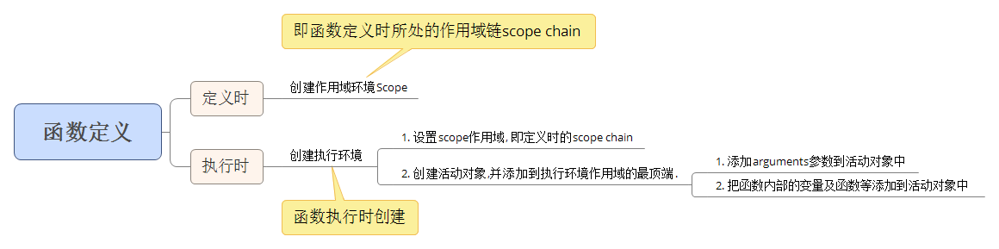

# js中函数的作用域链
### 1. 4个概念
先引入4个概念.
函数的执行函数环境(excution context),活动对象(call object),作用域(scope), 作用域链(scope chain)
### 2. 函数定义时的微观过程
```
<script type="text/javascript">
function a() {
var i = 0;
function b() { alert(++i); }
return b;
}
var c = a();
c();
</script>
```
1. 当定义函数a的时候，js解释器会将函数a的作用域链(scope chain)设置为定义a时a所在的“环境”，如果a是一个全局函数，则scope chain中只有window对象。
2. 当执行函数a的时候，a会进入相应的执行环境(excution context)。
3. 在创建执行环境的过程中，首先会为a添加一个scope属性，即a的作用域，其值就为第1步中的scope chain。即a.scope=a的作用域链。
4. 然后执行环境会创建一个活动对象(call object)。活动对象也是一个拥有属性的对象，但它不具有原型而且不能通过JavaScript代码直接访问。创建完活动对象后，把活动对象添加到a的作用域链的最顶端。此时a的作用域链包含了两个对象：a的活动对象和window对象。
5. 下一步是在活动对象上添加一个arguments属性，它保存着调用函数a时所传递的参数。
6. 最后把所有函数a的形参和内部的函数b的引用也添加到a的活动对象上。在这一步中，完成了函数b的的定义，因此如同第3步，函数b的作用域链被设置为b所被定义的环境，即a的作用域。

到此，整个函数a从定义到执行的步骤就完成了。此时a返回函数b的引用给c，又函数b的作用域链包含了对函数a的活动对象的引用，也就是说b可以访问到a中定义的所有变量和函数。函数b被c引用，函数b又依赖函数a，因此函数a在返回后不会被GC回收。
当函数b执行的时候亦会像以上步骤一样。因此，执行时b的作用域链包含了3个对象：b的活动对象、a的活动对象和window对象，如下图所示：
<img src="images/chatu/closure1.jpg" alt="" />
如图所示，当在函数b中访问一个变量的时候，搜索顺序是：
>1. 先搜索自身的活动对象，如果存在则返回，如果不存在将继续搜索函数a的活动对象，依次查找，直到找到为止。
>2. 如果函数b存在prototype原型对象，则在查找完自身的活动对象后先查找自身的原型对象，再继续查找。这就是Javascript中的变量查找机制。
>3. 如果整个作用域链上都无法找到，则返回undefined。
### 小结
小结，本段中提到了两个重要的词语：函数的定义与执行。文中提到函数的作用域是在定义函数时候就已经确定，而不是在执行的时候确定（参看步骤1和3）。